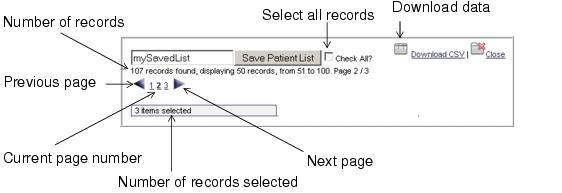

Navigating Report Table Results To assist you in selecting result records and analyzing the data, you can do the following: • View multiple pages of records • Sort the records by any column • Select records and download result data • Create a PatientDID list to use in other queries The following figure displays the tools for accomplishing these tasks. 